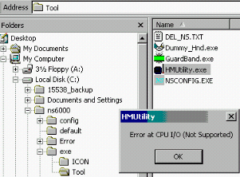
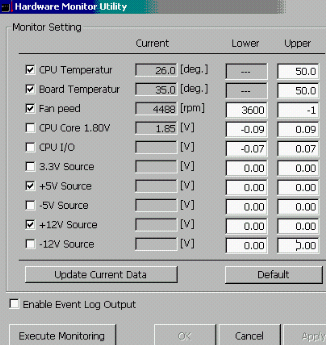
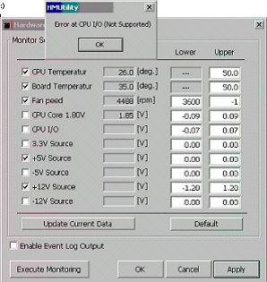

Service History
Subject: NS-6040 +12V Source Warning (W1718)" error occurred when homing the handler
Handler Model: NS-6040
Controller: SRC520CE
Date: Feb 2010
Symptom
During today CPU upgrading at SCS, "+12V Source Warning (W1718)" error occurred when homing the handler.
I intend to change the limit of the +12V source at the HMUtility but error occurred when loading the HMUtility program.
|
 |
 |
When force open the program by ignoring the error, all the lower and upper limits were in zero value. Furthermore, I was unable to change the value.

I checked out some of the NS-6000 handlers which I had done the upgrading, the HMUtility also facing the same program.
But for Win95 and Win98 on NS6000, the HMUtility can be open without any problem.
Check on both NS6040 S/N: 151223 and 15904 which were loan to SCS by KG and were Embedded Windows 2000 and MMI ver C7.14-SSY.
Both handlers also faced the same problem when I load the HMUtility program. I think can confirmed that there wasn't any problem on the hardware and software during my upgrading.
Questions
1) What happen in the future if "+12V Source Warning (W1718)" error occurred on the NS6040 Win2K?
2) Why Win 95 and Win98 on NS6040 and Win2K on NS7000 didn't have this problem?
Possible for Epson advise on the questions mention above?
Action
6 Feb 2010
Please check as follows;
1. Make sure that you can see each voltage on the BIOS or not.
2. Replace the CPU board
Note: When you disable the left side of “check box”,
It does not monitor.
But, it is just temporary solution.
Cause